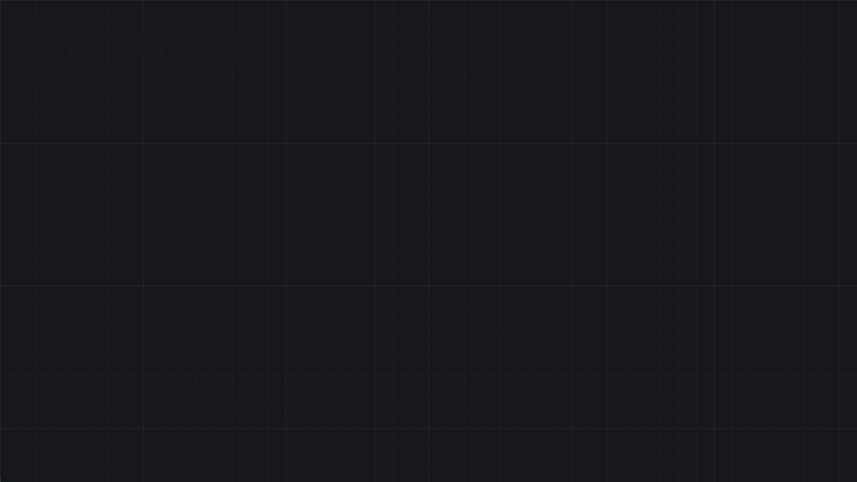
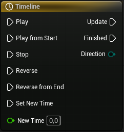
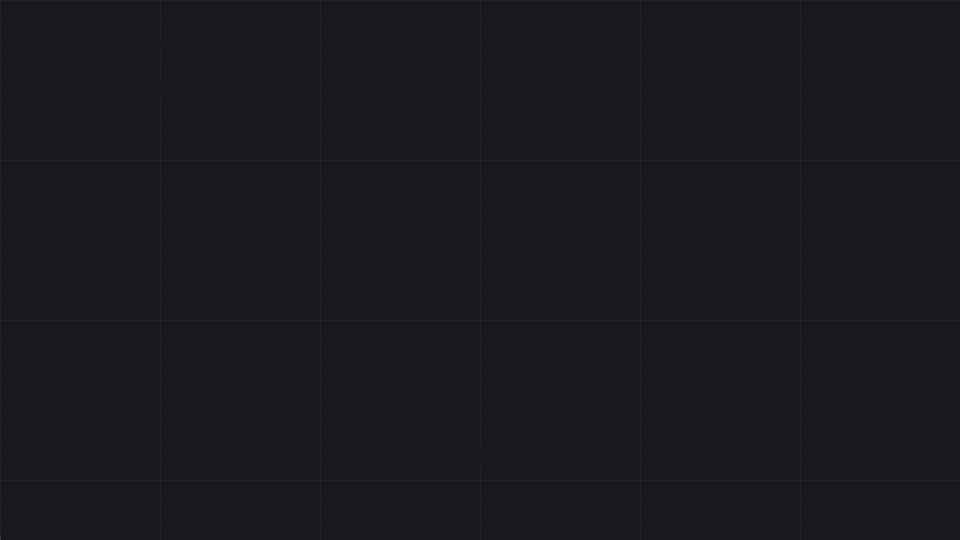

Blueprint (Unreal Engine)
Pas un cours complet d'Unreal : ce qu'il faut pour monter un personnage à la troisième personne animé, et organiser un projet avec des niveaux, une Game Instance et un Game Mode.
Blueprint, en bref
Blueprint est le langage de script visuel d'Unreal Engine : au lieu d'écrire du texte, on relie des nœuds dans un graphe. Chaque nœud a des pins d'exécution (le fil blanc — l'ordre dans lequel les choses se produisent) et des pins de données (colorés selon le type — la valeur qui circule). Sous le capot, Blueprint reste du C++ compilé ; c'est une couche visuelle par-dessus, pas un langage séparé.
| Type de Pin | Aperçu & Couleur | Rôle technique & Description |
|---|---|---|
Exec |
Fil blanc | Exécution : Déclenche le flux logique. Ce n'est pas une valeur numérique, juste l'ordre « et ensuite ». |
Boolean |
Rouge vif | Vrai ou Faux : Stocke un état binaire (0 ou 1, true / false). |
Integer |
Cyan / Turquoise | Nombre entier : Utilisé pour les compteurs, les index ou les ID (ex: -1, 0, 42). |
Float / Real |
Vert pâle | Nombre à virgule : Utilisé pour le temps, la santé ou la vitesse (ex: 3.14, 0.5). Représenté par le type Real (Double) sous UE5. |
Name |
Violet clair | Identifiant constant : Texte ultra-léger et optimisé pour identifier des assets, des os (Bones) ou des tags. Non modifiable à l'exécution. |
String |
Magenta / Fuchsia | Chaîne dynamique : Texte brut manipulable (concaténation, découpage). Idéal pour le débug ou la logique système. |
Text |
Rose saumon | Texte utilisateur : Gère nativement la localisation (traduction du jeu) et le formatage. C'est le type requis pour l'interface UI (UMG). |
Vector |
Jaune / Or | Vecteur 3D : Contient trois Floats (X, Y, Z). Idéal pour représenter une position, une direction ou une échelle dans l'espace. |
Rotator |
Bleu lavande | Rotation 3D : Contient l'orientation selon trois axes (Roll, Pitch, Yaw / Roulis, Tangage, Lacet). |
Transform |
Orange | Matrice complète : Combine une Position (Vector), une Rotation (Rotator) et une Échelle (Vector). Définit l'état spatial global d'un objet. |
Object Reference |
Bleu roi | Pointeur d'instance : Référence vers un objet précis qui existe physiquement dans votre niveau (ex: "ce" joueur, "cette" lampe). |
Class Reference |
Violet foncé | Type d'asset (Subclass Of) : Désigne un type d'objet théorique plutôt qu'une instance physique (ex: utilisé pour dire au nœud Spawn Actor quelle classe faire apparaître). |
Chaque type est détaillé un par un (nœuds, opérations, pièges) dans 1 · Variables, types & tags.
Suis d'abord les fils blancs (l'ordre d'exécution) de gauche à droite, puis reviens sur les pins colorés pour voir quelles valeurs alimentent chaque nœud.
Décisions : Branch, Switch & contrôle du flux
Les nœuds de décision aiguillent le fil d'exécution blanc : une entrée, plusieurs sorties, une seule empruntée.
| Nœud | Équivalent texte | Broches Clés | Rôle & Comportement |
|---|---|---|---|
Branch |
if / else |
Entrée : Condition (Bool) Sorties : True, False |
Oriente le flux d'exécution selon la valeur d'un booléen. (Raccourci : maintenir B + clic gauche). |
Switch on Int |
switch (int) |
Entrées : Selection, Start Index Sorties : 0, 1, ..., Default |
Ouvre une sortie d'exécution par valeur entière définie. La sortie Default s'active si l'entier ne correspond à aucune broche listée. |
Switch on String / on Name |
switch (string) |
Entrée : Selection Sorties : (Chaînes personnalisées), Default |
Ouvre une sortie d'exécution pour chaque chaîne de texte configurée. Possède une option cruciale Case Sensitive dans les détails pour respecter ou non la casse. |
Switch on E_… |
switch (enum) |
Entrée : Selection Sorties : (Une broche par état) |
Crée dynamiquement une sortie d'exécution pour chaque état défini dans l'énumération. C'est la méthode la plus propre et lisible pour gérer des machines à états (ex: états d'un joueur). |
Select |
Opérateur ternaire ou switch de valeur |
Entrée : Index (Wildcard: Bool, Int, Enum...) Sortie : Return Value |
Choisit et retourne une valeur (et non un chemin d'exécution) selon l'index fourni en entrée. Le type de valeur retourné s'adapte automatiquement à ce que vous y branchez. |
| Nœud | Broches Clés | Rôle & Comportement |
|---|---|---|
Sequence |
Sorties : Then 0, Then 1, Then... | Exécute ses sorties l'une après l'autre au cours de la même frame. Idéal pour organiser un long script. Attention : il n'attend pas la fin d'un nœud asynchrone (ex: Delay) placé dans une branche précédente pour lancer la suivante. |
Do Once |
Entrées : In, Reset, Start Closed Sortie : Out |
Ne laisse passer le flux qu'une seule fois. Reste bloqué jusqu'à ce qu'un signal active l'entrée Reset (ex: ramasser un objet unique, déclencher une cinématique). |
Do N |
Entrées : In, Reset, N Sorties : Out, Counter |
Laisse passer le flux un nombre exact de fois défini par la valeur N. L'entrée Reset remet le compteur à zéro. La sortie Counter indique le nombre d'exécutions actuelles. |
Flip Flop |
Sorties : A, B, Is A | Alterne automatiquement entre la sortie A et la sortie B à chaque nouvelle impulsion (ex: allumer/éteindre une lampe). Le booléen Is A permet de savoir quelle branche vient de s'exécuter. |
Gate |
Entrées : Enter, Open, Close, Toggle, Start Closed Sortie : Out |
Une porte logique. Le flux entrant par Enter ne ressort par Out que si la porte est ouverte. Les entrées permettent de l'ouvrir (Open), la fermer (Close) ou inverser son état (Toggle). |
Multi Gate |
Entrées : In, Reset, StartIndex Sorties : Out 0, Out 1, Out... |
Dirige le flux vers une sortie différente à chaque passage. Peut fonctionner de manière séquentielle ou totalement aléatoire (option Is Random). L'option Loop permet de recommencer au début une fois toutes les sorties utilisées. |
En C++, ptr && ptr->IsAlive() ne lit jamais ptr s'il est nul. En Blueprint, le nœud AND évalue toutes ses entrées : brancher Is Valid et une lecture sur la même référence dans un AND produit quand même l'erreur Accessed None. Enchaîner deux Branch, ou utiliser la macro Is Valid (avec pins d'exécution) d'abord.
Boucles

| Nœud | Broches Clés | Bon pour |
|---|---|---|
For Loop |
Sorties : Loop Body, Index, Completed | Répéter de First Index à Last Index — inclus : de 0 à 9 fait 10 tours. |
For Loop with Break |
Entrée : Break Sorties : Loop Body, Index, Completed |
Répéter sur une plage de nombres avec la possibilité de s'arrêter prématurément. |
For Each Loop |
Sorties : Loop Body, Array Element, Array Index, Completed | Parcourir entièrement un Array, du premier au dernier élément. |
For Each Loop with Break |
Entrée : Break Sorties : Loop Body, Array Element, Array Index, Completed |
Parcourir un Array et s'arrêter dès qu'on a trouvé l'élément recherché. |
Reverse For Each Loop |
Sorties : Loop Body, Array Element, Array Index, Completed | Parcourir un Array en sens inverse (indispensable si on supprime des éléments pendant la boucle). |
While Loop |
Sorties : Loop Body, Completed | Tant qu'une condition est vraie — le corps doit obligatoirement la rendre fausse pour éviter un plantage. |
Toutes les itérations tournent d'un coup, avant l'image suivante : un Delay dans le corps ne ralentit pas la boucle (elle se termine, le Delay ne se déclenche qu'une fois). Une While Loop dont la condition ne devient jamais fausse gèle le jeu jusqu'à l'erreur Infinite Loop detected. Pour répéter dans le temps : Set Timer by Event (case Looping) puis Clear and Invalidate Timer by Handle, ou Event Tick. Pour une animation fluide d'une valeur (porte, lumière, fondu) : une Timeline.
Double-cliquer sur un For Loop ouvre son graphe : une variable locale, un Branch, un Sequence, et un fil qui revient en arrière. Ce sont des macros de la bibliothèque StandardMacros — c'est aussi pour ça qu'elles sont utilisables dans une fonction.
Timelines
Une Timeline fait varier une ou plusieurs valeurs le long d'une courbe, sur une durée donnée, et prévient le graphe à chaque frame. C'est l'outil pour tout ce qui s'anime dans le temps sans animation squelettique : une porte qui pivote, une plateforme qui monte, une lumière qui clignote, un fondu.
Lerp qui fait pivoter la porte — dans un sens avec Play, dans l'autre avec Reverse.Le nœud

| Pin | Rôle |
|---|---|
| Play / Reverse | avance / recule depuis la position actuelle — une porte à moitié ouverte se referme depuis là où elle est |
| Play from Start / Reverse from End | repart du début / de la fin |
| Stop, Set New Time | fige la lecture ; saute à un instant précis |
| Update | sortie appelée à chaque frame pendant la lecture — c'est là qu'on applique la valeur |
| Finished | une fois, à la fin (dans un sens comme dans l'autre) |
| Direction | enum Forward / Backward — savoir si l'on ouvre ou ferme |
| une sortie par track | la valeur de la courbe à l'instant courant |
Les tracks et les réglages
| Track | Sortie | Exemple |
|---|---|---|
| Float | un nombre | un alpha 0 → 1 pour un Lerp — le plus courant |
| Vector | un vecteur | trajectoire en 3 axes d'une plateforme |
| Linear Color | une couleur | lumière qui passe du blanc au rouge |
| Event | une sortie d'exécution | jouer un son à 0,5 s précisément |
| Réglage (éditeur de Timeline) | Effet |
|---|---|
Length | durée totale ; Use Last Keyframe la cale sur la dernière clé |
AutoPlay | démarre tout seul au BeginPlay |
Loop | recommence indéfiniment (lumière qui pulse, objet qui flotte) |
| Clés | Shift + clic sur la courbe pour ajouter ; clic droit sur une clé → interpolation Auto (douce), Linear, Constant |
| Courbe externe | un asset Curve Float réutilisable dans plusieurs Timelines |
Set Play Rate | nœud sur la variable Timeline : ×2 = deux fois plus vite, sans refaire la courbe |
Exemple : une porte qui s'ouvre
| Étape | Nœuds |
|---|---|
| 1. Déclencher | On Component Begin Overlap (boîte devant la porte) → Play ; End Overlap → Reverse |
| 2. Calculer | Update → Lerp (Rotator) : A = porte fermée (0°), B = ouverte (90°), Alpha = track Float 0 → 1 |
| 3. Appliquer | Set Relative Rotation sur le mesh de la porte |
A et B doivent être fixes (variables, ou valeurs mémorisées au BeginPlay). Brancher en A la rotation actuelle de la porte fait glisser le point de départ à chaque frame : le mouvement accélère, et Reverse ne revient plus au bon endroit.
Une Timeline ne s'ajoute que dans l'Event Graph d'un Actor (clic droit → Add Timeline) : pas dans une fonction ni une macro, et pas dans un Widget — l'UI a ses propres Animations UMG. Elle devient un composant de l'Actor, accessible comme variable.
| Outil | Bon pour |
|---|---|
Delay | attendre une fois avant de continuer |
Set Timer by Event | répéter une action à intervalle régulier (toutes les 2 s) |
| Timeline | faire varier une valeur en douceur sur une durée, dans les deux sens |
Event Tick | logique continue sans fin prévue (suivre une cible) — à garder léger |
Types de collection : Array, Set, Map
N'importe quelle variable peut devenir une collection : dans le panneau Details, l'icône à droite du type fait passer de valeur simple à Array, Set ou Map. Blueprint n'a pas de type « List » séparé : l'Array joue ce rôle (c'est un TArray en C++, un tableau dynamique qui grandit tout seul).

Array, unicité pour le Set, une valeur par clé pour la Map.| Caractéristique | Array (Tableau) | Set (Ensemble) | Map (Dictionnaire) |
|---|---|---|---|
| Ordre | Oui (Indexation stricte à partir de 0). | Non ordonné. | Non ordonné. |
| Doublons | Autorisés (un même élément peut être présent plusieurs fois). | Strictement interdits (chaque élément est unique). | Clés uniques obligatoires, mais les valeurs associées peuvent être identiques. |
| Accès aux données | Get (a copy / a ref) via son Index numérique. |
Pas d'accès direct, vérification via Contains. |
Find via sa Clé (renvoie la Valeur associée + un booléen de réussite). |
| Ajout / Retrait |
Add, Add Unique, InsertRemove Index, Remove Item, Clear
|
Add, Remove, Clear
|
Add (écrase et remplace si la clé existe déjà), Remove, Clear
|
| Utilitaires clés |
Length, Last Index, Contains, Find Item, Shuffle
|
Union, Intersection, Difference, To Array
|
Keys, Values (extraient les données sous forme d'Arrays distincts)
|
| Parcours (Loops) | Direct via For Each Loop (ou Reverse For Each). |
Nécessite une conversion préalable via le nœud To Array. |
Parcours indirect : extraire les Keys (Array) puis boucler dessus avec un Find. |
| Cas d'usage idéal | Listes ordonnées, files d'attente, inventaires à emplacements fixes. | Gestion de tags, systèmes de quêtes (« déjà visité »), listes de validation d'objets uniques. | Bases de données locales, tables de correspondance (ex: lier un ID d'item à une quantité ou à une structure de stats). |
Sur un Array de structures, Get (a copy) et l'élément sorti par For Each Loop sont des copies : les modifier ne change rien dans le tableau. Utiliser Get (a ref) + Set Members in …, ou Set Array Elem. Et ne jamais retirer d'éléments pendant un For Each Loop sur le même tableau — parcourir à l'envers avec Reverse For Each Loop.
Un Array d'Arrays (ou une Map dont la valeur est un Array) n'existe pas directement en Blueprint : envelopper le tableau intérieur dans une structure. Les Set et Map ne sont pas répliqués en multijoueur — seul l'Array l'est.
Events, fonctions, macros & collapsed nodes
Quatre façons d'organiser un graphe. Elles se ressemblent visuellement mais ne se comportent pas pareil : c'est surtout le temps (peut-on attendre ?) et le retour (peut-on renvoyer une valeur ?) qui les distinguent.
| Caractéristique | Custom Event | Function | Macro | Collapsed Node |
|---|---|---|---|---|
| Emplacement | Dans l'Event Graph global. | Possède son propre graphe isolé. | Possède son propre graphe isolé. | Sous-graphe virtuel directement ancré dans le graphe courant. |
| Valeurs de retour | Non (unidirectionnel). | Oui (via un nœud Return Node). | Oui (via des broches de sortie de données). | Oui (via des broches de sortie de données). |
| Nœuds asynchrones / latents (Delay, Timeline, AI Move To) |
Oui. Parfaitement supportés. | Non. S'exécute obligatoirement d'un seul bloc au cours de la même frame. | Partiel. Accepte les Delays mais refuse catégoriquement les Timelines. | Oui. Conserve exactement les mêmes capacités que le graphe parent. |
| Variables locales | Non (utilise les variables globales du BP). | Oui (allouées et détruites à chaque appel, idéal pour la mémoire). | Partiel (via des nœuds spécifiques comme Local Integer, Local Float). | Non (utilise les variables du graphe parent). |
| Broches d'exécution multiples | Une seule entrée (broche d'appel). | Une seule entrée, une seule sortie d'exécution. | Oui (entrées/sorties libres). Permet de recréer des structures de flux (ex: type Branch). | Oui (entrées/sorties libres selon les liaisons faites avec l'extérieur). |
| Accès inter-Blueprints | Oui (appelable via une référence d'objet). | Oui (appelable via référence, et **surchargeable** dans les Blueprints enfants). | Non (locale au BP, sauf si créée dans une Blueprint Macro Library). | Strictement non (privé au graphe dans lequel il se trouve). |
| Réseau & Dispatchers | Oui. Utilisé pour les RPC (Run on Server, Multicast) et s'abonne aux Event Dispatchers. | Non. Impossible de répliquer directement une fonction sur le réseau. | Non. | Non. |
| Rôle principal | Réagir à un événement, déclencher des actions réparties dans le temps ou synchroniser le réseau. | Effectuer un calcul pur, une vérification ou une action logique réutilisable et encapsulée. | Créer des petits motifs répétitifs de contrôle de flux. Le code est dupliqué en tâche de fond à chaque instance. | Purement cosmétique. Masquer et ranger un paquet de nœuds pour rendre le graphe lisible. |
Cocher Pure retire les pins d'exécution (nœud vert, comme un Get) — pour un calcul sans effet de bord. Attention : un nœud pur est réévalué à chaque pin qui le lit. Un Random Integer pur branché à deux endroits donne deux valeurs différentes : stocker le résultat dans une variable d'abord.
Sélectionner des nœuds → clic droit → Collapse Nodes les range dans un seul nœud gris (double-clic pour entrer, Expand Node pour défaire) : aucune différence à l'exécution. Collapse to Function et Collapse to Macro font la même chose mais produisent une vraie fonction ou macro, réutilisable ailleurs. Le macro est « inliné » : chaque usage recopie son contenu à la compilation.
Les pages couvertes
| Page | Sert à |
|---|---|
| 1 · Variables, types, cast & tags | chaque type en détail (Boolean, Integer, Float, String/Name/Text, Vector, Rotator, Transform), conversions et parsing, références, Cast To, Actor Tags & Gameplay Tags |
| 2 · Personnage & Input | composants d'un Character 3e personne, Pawn & possession, caméra (SpringArm, réglages, IA_Look), Enhanced Input (Modifiers, Triggers, états, priorité des Mapping Contexts), boîtes de collision |
| 3 · Animation Blueprint | Blend Space, Event Graph vs AnimGraph, State Machine, Layered blend per bone, cached poses, Anim Notify & Notify State, retargeting Mixamo |
| 4 · Levels | niveaux & sublevels, Open Level, méthodes de streaming (Always Loaded, Blueprint, volumes, World Partition), Level Blueprint, World Settings |
| 5 · UI, données & orienté objet | Widget Blueprints (UMG : création, catalogue des widgets, slots, visibilité, animations, événements, focus, drag & drop, menus), structures, Data Tables, Data Assets, énumérations, héritage, polymorphisme, classes abstraites, Blueprint Interfaces, Function Library |
| 6 · Materials, SFX & VFX | Dynamic Material Instance, intégrer des sons et des particules (Niagara/Cascade) depuis un Blueprint |
| 7 · Collisions & physique | Object Types et canaux custom, presets, formes de collision, Mobility, collision des meshes, traces, Hit/Overlap, simulation, tunneling & CCD, forces, contraintes, ragdoll, Physical Material, débogage |
| 8 · Fonctions, events & timers | fonctions, Custom Events, Event Dispatcher & event handler, macros et Macro Library, Set Timer by Event / by Function Name (pause, reprise), exécution à la frame suivante |
| 9 · Game Framework & classes | Actor et cycle de vie, Actor Component & Scene Component, Pawn / Character, PlayerController & AIController, caméra, HUD, GameModeBase vs GameMode, GameState & PlayerState, Game Instance, World, Gameplay Statics, subsystems, où ranger une donnée |